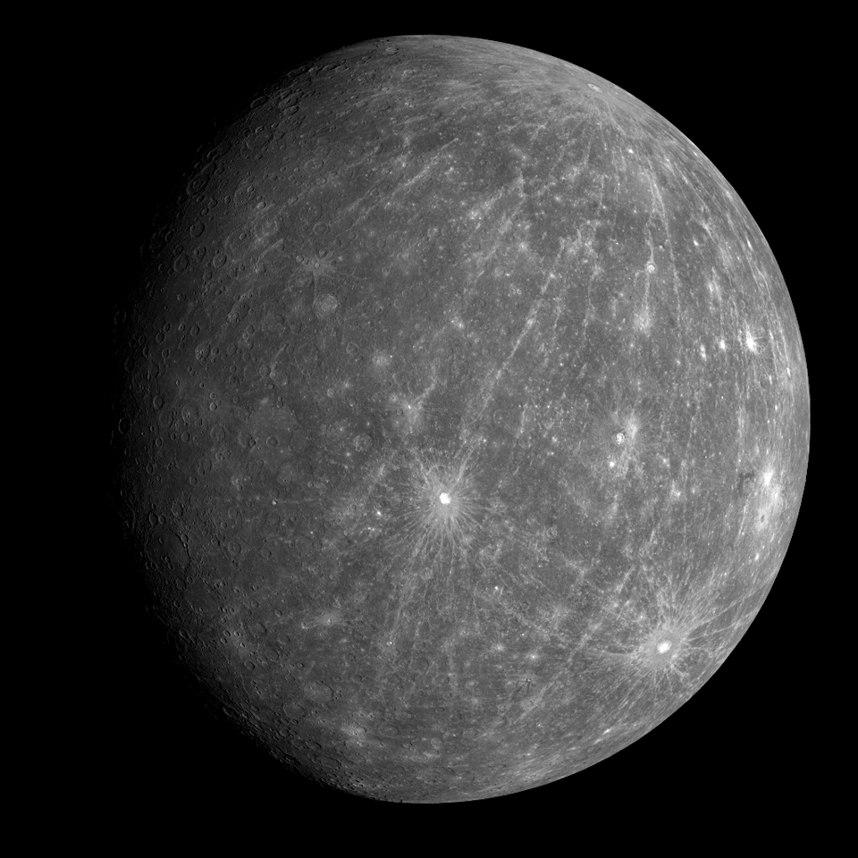

在無垠的宇宙之中，有一個由光與引力編織而成的舞台——太陽系。
八顆行星沿著軌道運行，圍繞著炙熱的太陽，演奏著永不停歇的星際樂章。
從此刻開始，踏上你的太空之旅吧。
太陽系是太陽及其周圍被引力束縛的天體（包括8顆行星、衛星、矮行星、小行星、彗星等）組成的系統，約46億年前由分子雲塌縮形成，分為內太陽系（水金地火）和外太陽系（木土天海），主要包含四大類天體：類地行星（岩石）和類木行星（氣態/冰巨星），以及小行星帶與柯伊伯帶等區域，其中太陽質量佔總質量$99.86\%$。
八大行星介紹
水星 Mercury
太陽系中最小、離太陽最近的行星。表面佈滿隕石坑，白天酷熱、夜晚寒冷。
- 平均半徑：$2,439.7 \text{ km}$
- 質量：$0.055$ 個地球
- 位置：離太陽最近
- 特色：沒有大氣層、日夜溫差超大（從 $430^\circ\text{C}$ 到 $-180^\circ\text{C}$）
- 表面：類似月球，有大量隕石坑
- 特點：公轉最快，只需 $88$ 天繞太陽一圈

金星 Venus
表面被濃厚的酸性雲層覆蓋，是太陽系最熱的行星，被稱為地球的姊妹星。
- 平均半徑：$6,051.8 \text{ km}$
- 質量：$0.815$ 個地球
- 位置：第二近太陽
- 特色：全行星最熱，大氣層厚、充滿二氧化碳
- 表面：溫度高達 $460^\circ\text{C}$，火山多
- 特點：自轉方向與大多數行星相反

地球 Earth
太陽系中唯一已知存在生命的行星，擁有海洋、大氣與適合生物生存的溫度。
- 平均半徑：$6,371 \text{ km}$
- 位置：太陽第三顆
- 特色：唯一已知有生命的星球
- 表面：$70\%$ 海洋、適宜溫度及大氣
- 特點：有液態水、保護性的磁場與大氣層

火星 Mars
被稱為紅色星球，地表遍布氧化鐵，過去可能曾有液態水，是研究生命跡象的重要目標。
- 平均半徑：$3,389.5 \text{ km}$
- 質量：$0.107$ 地球
- 位置：地球外側
- 特色：紅色外觀，因富含氧化鐵
- 表面：太陽系最高的火山「奧林帕斯山」
- 特點：極地有冰帽，曾有液態水的證據
- 平均溫度：$-63^\circ\text{C}$

木星 Jupiter
太陽系中最大的行星，由氣體組成，擁有著名的大紅斑與強烈風暴系統。
- 平均半徑：$69,911 \text{ km}$
- 質量：$318$ 個地球
- 位置：太陽系最大行星
- 特色：巨大的氣體行星
- 表面：無固體表面，有「大紅斑」巨型風暴
- 特點：磁場極強，衛星最多（包括著名的四大衛星）

土星 Saturn
以壯觀的環形結構聞名，由冰與岩石碎片組成，是太陽系最具代表性的氣態巨行星之一。
- 平均半徑：$58,232 \text{ km}$
- 質量：$95$ 個地球
- 位置：第二大行星
- 特色：最著名的壯麗行星環
- 表面：氫、氦為主的氣態
- 特點：密度很低，若有足夠大的水池，理論上能浮起

天王星 Uranus
自轉軸大幅傾斜幾乎橫躺著自轉，外觀呈淡藍色，是冰巨行星的代表。
- 平均半徑：$25,362 \text{ km}$
- 質量：$14.5$ 個地球
- 位置：外側冰巨星之一
- 特色：自轉軸幾乎水平，像「躺著轉」
- 表面：主要由冰（甲烷、氨、水）構成
- 特點：藍色來自甲烷吸收光線

海王星 Neptune
自轉軸大幅傾斜幾乎橫躺著自轉，外觀呈淡藍色，是冰巨行星的代表。
- 平均半徑：$24,622 \text{ km}$
- 質量：$17$ 個地球
- 位置：太陽系最外側行星
- 特色：風速可達每秒 $600$ 公尺，是太陽系最強風
- 表面：冰巨星，藍色因甲烷反射
- 特點：公轉 $165$ 年繞太陽一圈